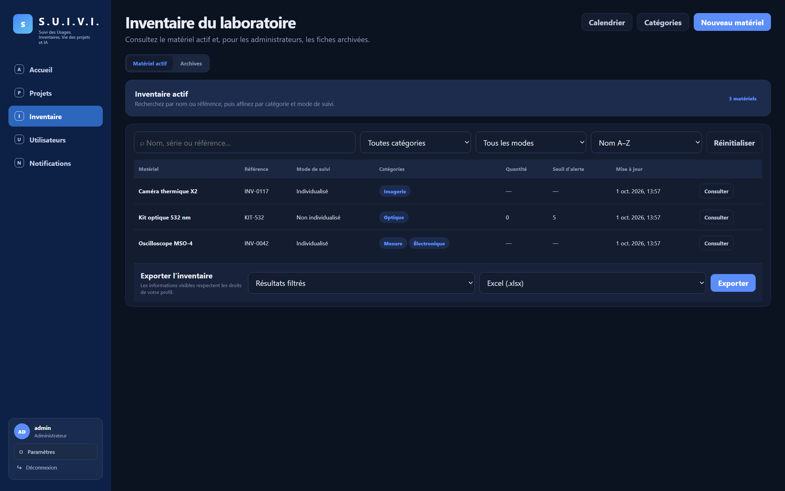
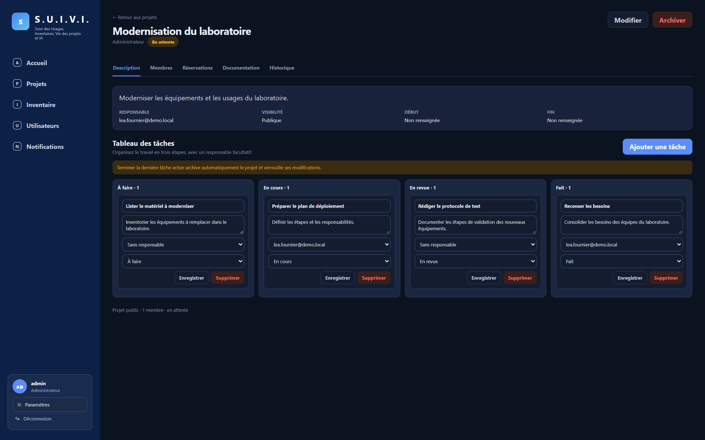
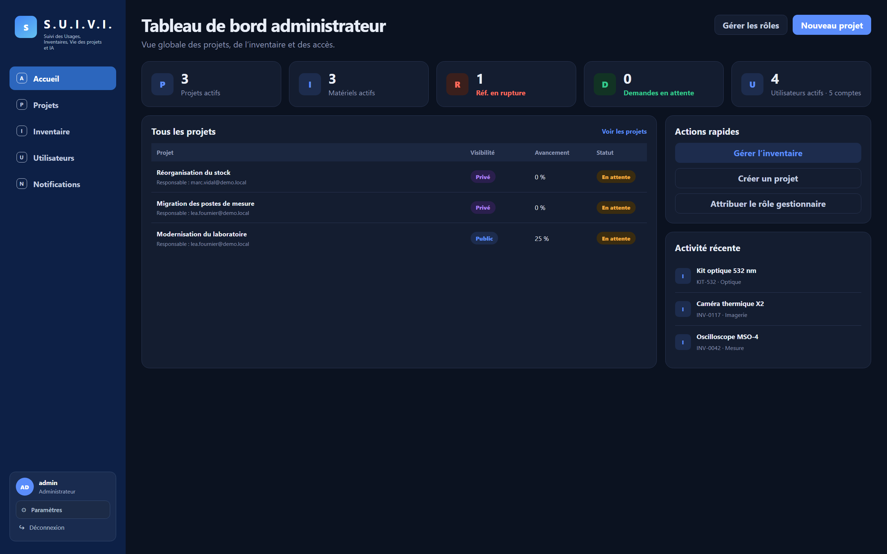
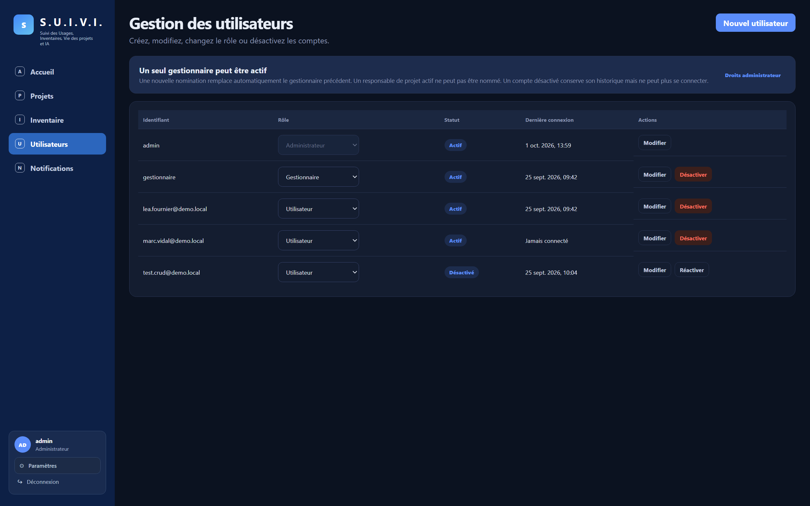
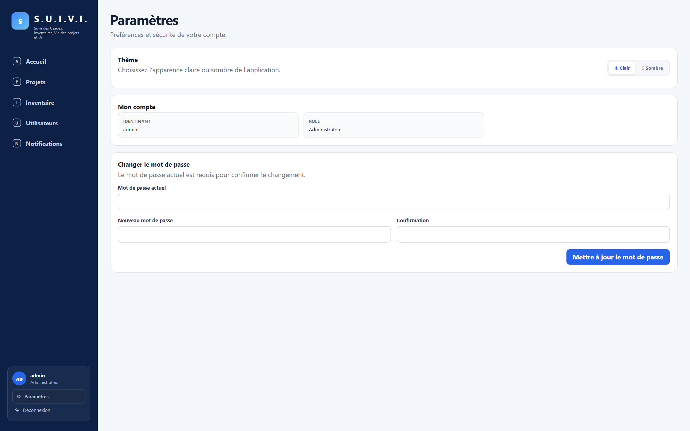
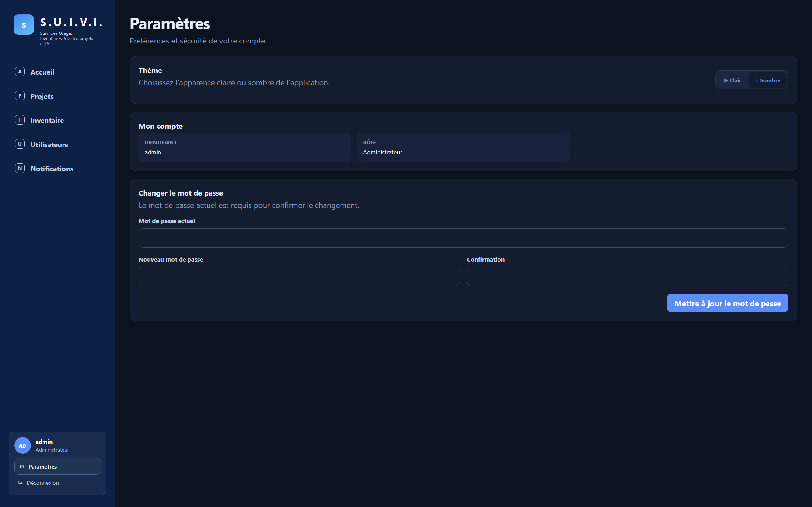
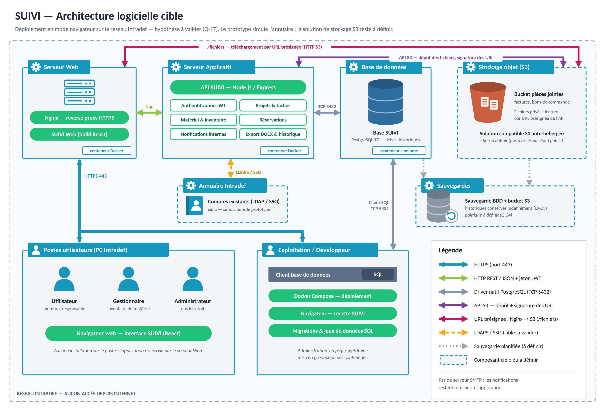

Suivi des Usages, Inventaires, Vie des projets et IA
L'application qui réunit l'inventaire, les projets et les réservations d'un laboratoire.
MT VAYER · SGT BAELDE · SGT RIGOUSSEN · SGT LE MAITRE
Lundi 5 octobre 2026
Version de démonstration : commit c84e8af · 1ᵉʳ octobre 2026
Retrouver vite un appareil, ses références et ses documents : factures, bons de commande.
Réserver un appareil pour un projet, sans risque de double réservation.
Garder la trace des modifications, des réservations et de la vie des projets.
SUIVI réunit l'inventaire, les projets et les réservations dans un seul outil, avec les bons droits pour chacun et une trace de tout.
Administrateur, gestionnaire, utilisateur : ce sont les trois seuls rôles de SUIVI. Un « responsable » n'est pas un rôle à part — c'est simplement l'utilisateur qui a créé le projet présenté en démonstration.
[Rôle dans le projet]
[Une réalisation concrète, visible dans l'application]
Partie 1 · Contexte, équipe, utilisateurs[Rôle dans le projet]
[Une réalisation concrète, visible dans l'application]
Partie 2 · Technologies, architecture[Rôle dans le projet]
[Une réalisation concrète, visible dans l'application]
Partie 3 · Démonstration (solo)[Rôle dans le projet]
[Une réalisation concrète, visible dans l'application]
Partie 4 · Droits, bilan, conclusion• Gère toutes les données et tous les projets
• Voit les archives et les historiques
• Crée, modifie et désactive les comptes
• Change le rôle de n'importe quel compte
• Tient l'inventaire et les catégories
• Exporte l'inventaire en Excel ou PDF
• Traite les demandes de réapprovisionnement
• Aucun accès aux projets
• Consulte l'inventaire actif
• Crée des projets, réserve du matériel
• Signale une rupture de stock
• Notifié si un matériel réservé est archivé
• Selon le projet : responsable (créateur), membre ou simple lecteur
Les droits sont vérifiés par l'API à chaque requête : cacher un bouton ne suffit pas.
Tableaux, Kanban, pages dédiées : des écrans qui changent selon le profil.
Un seul endroit où tous les droits sont vérifiés.
Des données très liées, et une base qui bloque elle-même les doubles réservations.
Un modèle central, des migrations versionnées, des transactions.
Les factures restent hors de la base, dans un espace privé.
Toute l'application démarre en une commande.
Une requête →
Un fichier joint →
Connexion, maquettes, tableau de bord
Visibilité, membres, Kanban, documentation
Fiches, catégories, recherche, historiques
Réservations, archives, notifications
Calendrier, exports Excel/PDF
Itérations complémentaires demandées par le client
Le labo reçoit un analyseur de spectre. Une équipe le réserve pour sa campagne de mesures. Le projet se termine, l'appareil redevient libre.
Jouée en solo par SGT RIGOUSSEN, qui se connecte successivement avec les quatre comptes de démonstration.
Ajoute l'analyseur et joint sa facture.
Fixe un seuil d'alerte, exporte l'inventaire.

Fait avancer le Kanban jusqu'à En revue.
Ajoute un membre, exporte la documentation.

Réserve, se fait refuser un chevauchement.
Ouvre le calendrier et la page du projet.

Archive un matériel ; le projet se clôt seul.
Consulte la page Paramètres et les comptes.

Le même scénario, découpé en huit actions. Support de suivi pendant la démonstration en direct dans l'application.
Compte utilisateur déjà membre du projet de démonstration.
Informations limitées au profil connecté, raccourcis vers l'inventaire et les projets.
Recherche du matériel préparé, fiche, catégories et disponibilité.
Visibilité privée, membres, documentation : le gestionnaire reste exclu.
Une tâche avance jusqu'à En revue ; la dernière tâche peut clôturer le projet.
Créneau de 30 minutes sur un matériel individualisé ; un chevauchement est refusé.
Aperçu Markdown déjà rempli, export Word du projet.
La réservation apparaît ; un projet inaccessible reste masqué sous « Réservé ».
Plan de secours en captures : Annexe D.
Un projet privé n'est jamais découvert par un utilisateur extérieur.
Le gestionnaire ne peut accéder à aucun projet, quelle que soit sa visibilité.
Nommer un nouveau gestionnaire rétrograde automatiquement le précédent.
Deux créneaux incompatibles sur le même matériel ne peuvent jamais coexister.
L'archivage conserve l'historique et libère les réservations concernées.
La dernière tâche active terminée clôture le projet et le matériel réservé.
Brancher l'authentification du réseau cible à la place de la connexion simulée. Le reste de l'application ne change pas.
Analyser chaque fichier avant de le rendre téléchargeable. Le circuit d'envoi par lien signé s'y prête déjà.
Scanner l'étiquette pour ouvrir la fiche ou réserver, directement depuis la paillasse.
Chercher dans l'inventaire en langage courant, sans que les données quittent le réseau.
Merci. Place à vos questions.
MT VAYER · SGT BAELDE · SGT RIGOUSSEN · SGT LE MAITRE
| Action | Administrateur | Gestionnaire | Utilisateur |
|---|---|---|---|
| Consulter l'inventaire actif | Oui | Oui | Oui |
| Gérer le matériel et les catégories | Oui | Oui | Non |
| Exporter l'inventaire | Oui | Oui | Non |
| Voir l'historique d'un matériel actif | Oui | Oui, projets masqués | Non |
| Voir le matériel archivé | Oui | Non | Non |
| Créer un projet | Oui | Non | Oui |
| Voir un projet privé | Oui | Non | Si membre |
| Modifier un projet, ses tâches, ses réservations | Oui | Non | Si membre |
| Archiver un projet | Oui | Non | Si responsable |
| Créer, modifier, désactiver un compte | Oui | Non | Non |
| Changer le rôle d'un compte | Oui | Non | Non |
L'API refuse un horaire qui ne finit pas par 00 ou 30.
10 h–11 h puis 11 h–12 h se suivent sans se chevaucher.
PostgreSQL rejette deux réservations actives qui se recouvrent, même envoyées au même instant.
Ce n'est pas qu'une vérification côté application : la contrainte est posée directement sur la table, au niveau de la base de données. Même deux requêtes envoyées exactement au même instant ne peuvent pas créer un chevauchement — PostgreSQL rejette la seconde.
Quantité et seuil d'alerte sur le matériel non individualisé. Signalement de rupture par un utilisateur, traitement par l'administrateur ou le gestionnaire.
L'administrateur crée, modifie, change le rôle et désactive un compte. Chaque profil change son propre mot de passe.
La fiche d'un projet devient une page à part entière, avec sa propre adresse, plutôt qu'une fenêtre.
Une quatrième colonne fixe, entre En cours et Fait, sans incidence sur la clôture automatique.
Un tag en attente, actif ou clôturé, calculé automatiquement à partir des dates et de l'archivage.
Thème clair ou sombre mémorisé, page personnelle pour le compte et le mot de passe.


Captures de l'application au commit c84e8af, à utiliser si la démonstration en direct échoue.
Reprise à l'identique de CONSIGNES.md — 18 minutes au total, puis 10 minutes de questions hors chronométrage.
| Intervenant | Partie principale | Durée cible | Questions à prendre en priorité |
|---|---|---|---|
| MT VAYER | Contexte, besoin, équipe et utilisateurs | 4 min 30 | Besoin client, périmètre, organisation de l'équipe |
| SGT BAELDE | Technologies, architecture et méthode | 4 min 30 | Choix techniques, sécurité, déploiement |
| SGT RIGOUSSEN | Démonstration fonctionnelle | 4 min 30 | Parcours utilisateur, ergonomie, fonctions métier |
| SGT LE MAITRE | Droits, qualité, limites, évolutions et conclusion | 4 min 30 | Tests, règles de gestion, améliorations futures |
Une personne répond d'abord ; une seconde complète seulement si elle apporte un élément nouveau. Si la réponse n'est pas connue, dire ce qui reste à valider plutôt que d'improviser.
Déploiement Docker, réseau Intradef, stockage objet et sauvegardes — hypothèses de cible marquées en pointillés.

Rôle administrateur, gestionnaire ou utilisateur. Crée des projets, participe, réserve.
Un responsable, une visibilité, des membres (Participation), des tâches et une documentation.
Relie un utilisateur à un projet dont il est membre, en plus du responsable.
Appartient à un projet, état À faire / En cours / En revue / Fait, responsable facultatif.
Individualisé ou non, catégories, pièces jointes, quantité et seuil d'alerte si non individualisé.
Relie un matériel individualisé et un projet sur un créneau ; contrainte d'exclusion en base.
Signalée par un utilisateur sur un matériel en rupture, traitée par l'administrateur ou le gestionnaire.
Un destinataire, un type (aujourd'hui : archivage d'un matériel réservé), lue ou non.
Un journal daté et attribué par domaine : projet, matériel, réservation.
Tests unitaires avec dépendances simulées (dépôts de données côté serveur, store Pinia côté interface) : rapides, sans base de données réelle.
Politique d'accès aux projets (qui voit quoi), services métier isolés (projets, matériel, réservations, utilisateurs, notifications, tableau de bord), formats d'export réels (DOCX, Excel, PDF) vérifiés à la signature du fichier.
Composants partagés (disposition, fenêtres modales, badges de rôle), vues métier (calendrier, inventaire, notifications, projets), utilitaires (appels API, rendu Markdown).
Au-delà des limites déjà annoncées (diapositive 10) — issues du registre de suivi du projet.
| Sujet | Question ouverte |
|---|---|
| Reprise de données | Quel inventaire existant reprendre, quels volumes réels de comptes et de matériel prévoir ? |
| Exploitation | Politique de sauvegarde et de restauration, objectifs de performance et de disponibilité |
| Notifications | Regroupement, durée de conservation, retour à « non lu » ; un seul déclencheur existe à ce jour |
| Export | L'export complet doit-il inclure les archives pour l'administrateur, et avec quelles colonnes exactes ? |
| Calendrier | Profils, vues et périodes précises à couvrir au-delà de la consultation de base |
| Inventaire | Règle d'unicité attendue pour les identifiants techniques (numéro de série, d'inventaire) |